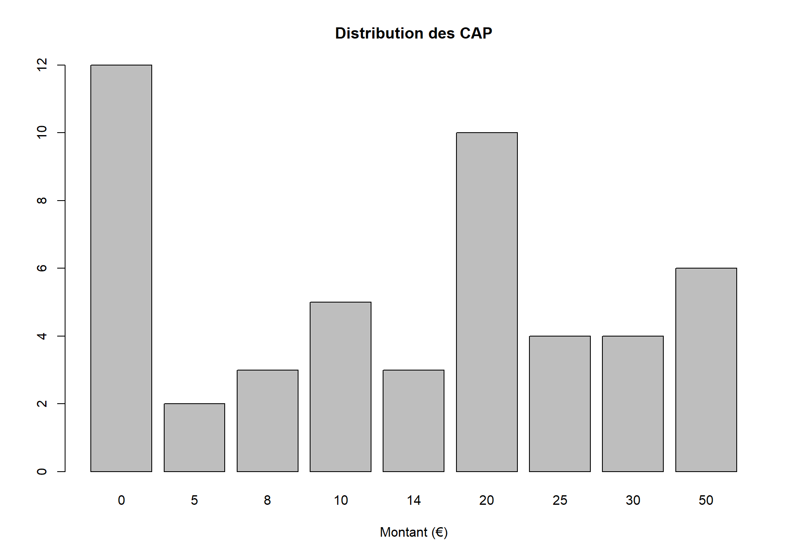
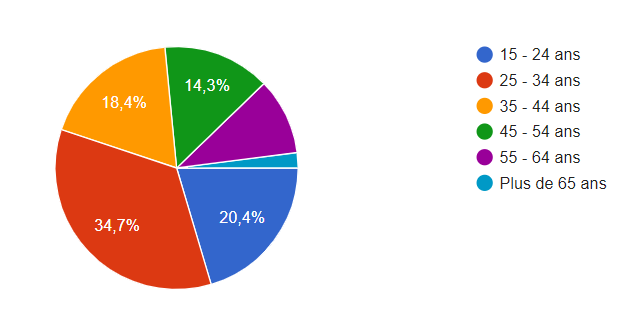

7 Analyse des résultats
7.1 Analyses statistiques
Nous avons en total un échantillon composé de 49 observations. Le questionnaire que nous avons élaboré comporte 20 questions dont 18 sont obligatoires. 38 des personnes ayant répondu vivent à Angers, 11 dans les périphéries d’Angers (moins de 15 km), une personne qui vit à Paris a aussi répondu au questionnaire, mais du fait des filtres que nous avons activé sur le questionnaire, elle a été invitée à soumettre le questionnaire plus tôt sans répondre aux questions relatives à l’enquête.
54,1% des répondants sont des femmes. Dans 42% des cas les personnes qui ont répondu au questionnaire vivent depuis plus de 15 ans à Angers. 26% ont vécu entre 6 et 15 ans à Angers, 24% entre 1 et 5 ans. 8% vivent sur Angers depuis moins de 1 an.
58% vivent en appartement, contre 42% en maison. 52% des répondants sont locataires, 32% propriétaire et les 16% restants sont logés.
61,2% des répondants disent que comparée à d’autres villes, la qualité de vie à Angers est bonne, 20,4% pensent qu’elle est assez bonne et 18,4% pensent qu’elle est excellente.
Sur les répondants, 83,7% reconnaissent qu’il y a des à Angers où il fait plus chaud que d’autres. Parmi ces endroits où il fait plus chauds, le Centre-Ville est cité en premier (à 90,2%), suivi du quartier de la Roseraie (39%), puis Monplaisir (26,8).
57,1% des répondant affirment avoir déjà senti un changement net de température en entrant ou en sortant de l’une de ces zones. 63% des répondant se rendent dans une de ces zones pour des raisons de loisir ou visite, 30% pour des raisons professionnelles, 30% habitent dans ces zones.
A la question Pensez-vous que la mise en place d’une ou plusieurs de ces solutions pour la ville d’Angers soit : , 53% ont répondu très importante, 40% ont répondu importante et 6% ont répondu sans importance.
Voici la distribution du consentement à payer des répondants obtenu grâce au scénario d’évaluation contingente :
 24,5% des répondants ont un consentement à payer maximal de 0€, 20,4% ont un consentement à payer de 20€, 12,2% sont prêt à payer au maximum 50€ etc …
Nous avons choisi comme moyen de paiement, la taxe d’habitation. Le montant à payer viendrait s’ajouter à la taxe d’habitation. Or cette taxe a été supprimé pour plusieurs ménages en France et elle est appelée à disparaître. Le questionnaire comprend donc une question pour demander si la personne est concernée par la suppression de la taxe d’habitation. 65,3% des répondants sont concernés par cette suppression contre 34,7% qui ne le sont pas. Il se peut que dans les 34,7% non concernés par la suppression il y ait des personnes qui n’ont tout simplement pas la taxe d’habitation (ex : étudiants vivant chez leurs parents).
Pour les personnes ayant un consentement à payer de 0, nous avons demandé les raisons de ce choix. Il s’agit d’une question à choix multiples. Parmi les réponses 37,9% estiment que ce n’est pas eux de payer, 17,2% disent que ces mesures ne sont pas nécessaires, 17,2% disent aussi qu’ils ont peur de payer pour les autres (problème du passager clandestin).
Les personnes ayant répondu au questionnaire appartiennent aux tranches d’âge suivantes : 
20% des répondants sont des étudiants, 20% des employés, 18% des cadres ou personnes exerçant des professions intellectuelles supérieures, 14% sont des personnes exerçant un des professions intermédiaires, 12% sont sans emploi, 10% sont des artisans, commerçants et 4% sont des ouvriers.
30,6% des répondants ont le Bac comme plus haut diplôme, 20,4% ont un Master (Bac +4/5), 16% ont une licence, 14% ont un BTS (Bac + 2), 4% un doctorat et 2% sans diplôme.
36,2% des répondants gagnent moins de 1247 euros par mois, 18% ont un revenu mensuel qui se situe entre 1845 à 2340 euros, 16,3% gagnent entre 2341 à 3653 euros, 16,3% gagnent entre 1248 à 1534 euros.